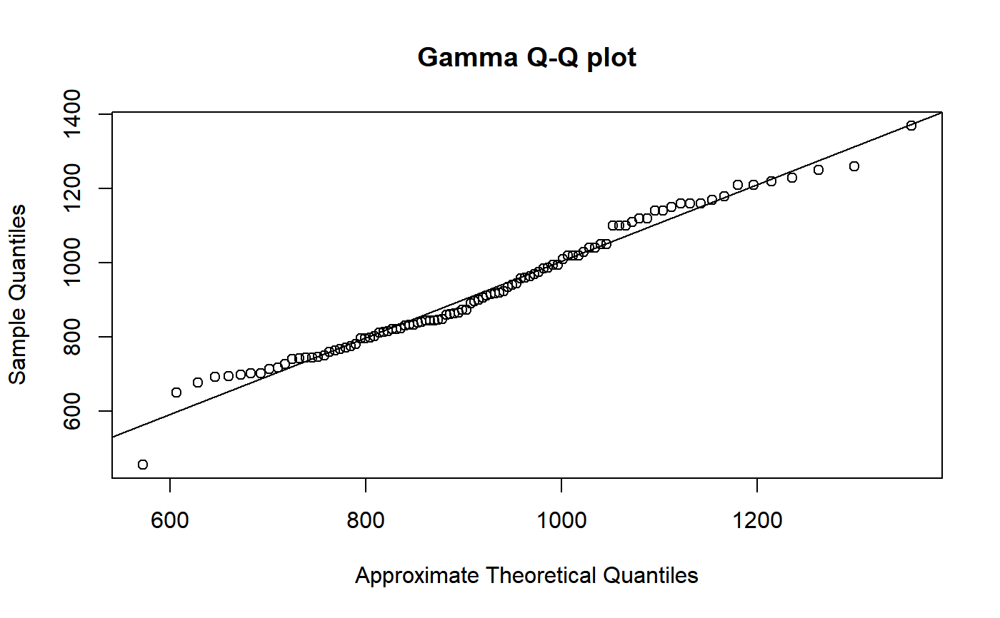
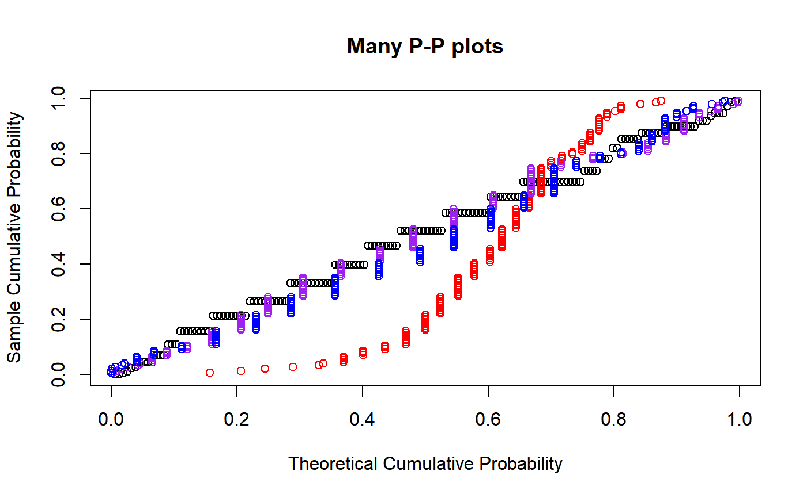

R/probability_plots.R
ProbabilityPlots.RdMake quantile-quantile plots and probability-probability plots using maximum likelihood estimation.
ppmlplot(y, obj, plot.it = TRUE, datax = FALSE, ...) ppmlline(...) ppmlpoints(y, obj, plot.it = TRUE, datax = TRUE, ...) qqmlplot(y, obj, plot.it = TRUE, datax = FALSE, ...) qqmlline(y, obj, datax = FALSE, probs = c(0.25, 0.75), qtype = 7, ...) qqmlpoints(y, obj, plot.it = TRUE, datax = TRUE, ...)
| y | Numeric vector; The data to plot on the |
|---|---|
| obj | Either an |
| plot.it | Logical; should the result be plotted? |
| datax | Logical; should |
| ... | Graphical parameters. |
| probs | Numeric vector of length two, representing probabilities. Corresponding quantile pairs define the line drawn. |
| qtype | The |
For qqmlplot, qqmlpoints, ppmlplot, and
ppmlpoints, a list with components x (plotted on the x axis)
and y (plotted on the y axis). qqmlline and ppmlline
returns nothing.
qqmlplot produces a quantile-quantile plot (Q-Q plot) of the values in
y with respect to the distribution defined by obj, which is
either a univariateML object or a function returning a
univariateML object when called with y. qqmlline adds a
line to a “theoretical”, quantile-quantile plot which passes through
the probs quantiles, by default the first and third quartiles.
qqmlpointsbehaves like stats::points and adds a Q-Q plot to
an existing plot.
ppmlplot, ppmlline, and ppmlpoints produce
probability-probability plots (or P-P plots). They behave similarily to the
quantile-quantile plot functions.
This function is modelled after qqnorm.
Graphical parameters may be given as arguments to all the functions below.
M. B. Wilk, R. Gnadadesikan, Probability plotting methods for the analysis for the analysis of data, Biometrika, Volume 55, Issue 1, March 1968, Pages 1–17, https://doi.org/10.1093/biomet/55.1.1
qqmlline(Nile, obj)## Make multiple probability plots. datax = TRUE must be used to make this ## look good. ppmlplot(airquality$Wind, mlgamma, main = "Many P-P plots")ppmlpoints(airquality$Wind, mlexp, col = "red")ppmlpoints(airquality$Wind, mlweibull, col = "purple")ppmlpoints(airquality$Wind, mllnorm, col = "blue")